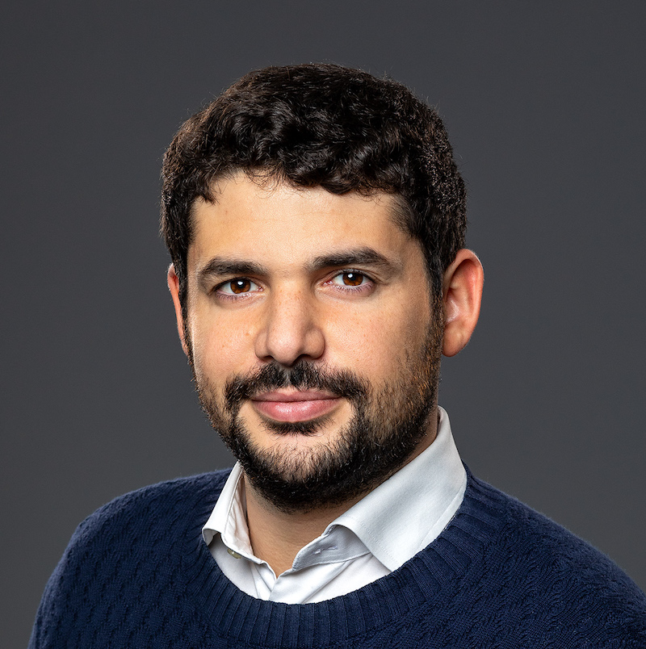

Theoretical physicist — scattering amplitudes & positive geometry
I look for the hidden geometry behind how particles scatter, reformulating quantum field theory in the language of curves on surfaces, polytopes, and tropical geometry.

Research
My work sits at the meeting point of scattering amplitudes, combinatorics, and geometry — the program sometimes called surfaceology. The recurring idea is that physical quantities are encoded by positive geometries: associahedra and their relatives, configuration spaces of curves on surfaces, and tropical limits that make hard integrals tractable. I'm also interested in the precision QCD side, computing master integrals for Higgs-plus-jet production at the LHC.
Selected work
Selected talks